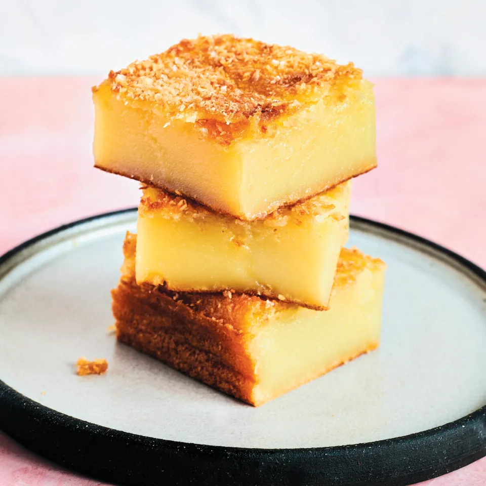

Butter Mochi

Description
This is the ultimate treat for mochi lovers.
It combines the perfectly chewy, slightly sticky and dense texture of mochi
with a buttery, custard-like flavor of cake, all the while
forming a crisp golden crust.
It is ooey gooey with a hint of coconut, sure to please any crowd.
Ingredients
- 4 large eggs
- 2 tsp vanilla extract
- 1 cups skim milk
- 1 pound Mochiko flour
- 2 cups sugar
- 2 tsp baking powder
- 1/2 tsp kosher salt
- 1/2 cup unsalted butter, melted
- One 13 1/2 ounce can coconut milk
- Optional: 1/2 cup unsweetend shredded coconut
Method
- Preheat the oven to 350°F. Grease a 9 by 13-inch baking pan with butter or oil.
- In a bowl, whisk together the eggs, vanilla, and milk. In another larger bowl, whisk together the mochiko, sugar, baking powder, and kosher salt.
- Pour the wet ingredients into the dry ingredients and, with a wooden spoon stir until well combined.
Add the melted butter and coconut milk and mix until fully incorporated.
- Pour the mixture into the prepared pan and rap the pan on the counter a couple of times to bring any air bubbles up to the surface.
If desired, sprinkled the shredded coconut on top lightly.
- Bake until the mochi is set and golden brown on top, about 1 hour.
Set the pan on a wire rack and let cool completely before slicing into rectangles using a plastic knife to minimize sticking.
- Store in an airtight container at room temperature for up to 3 days.